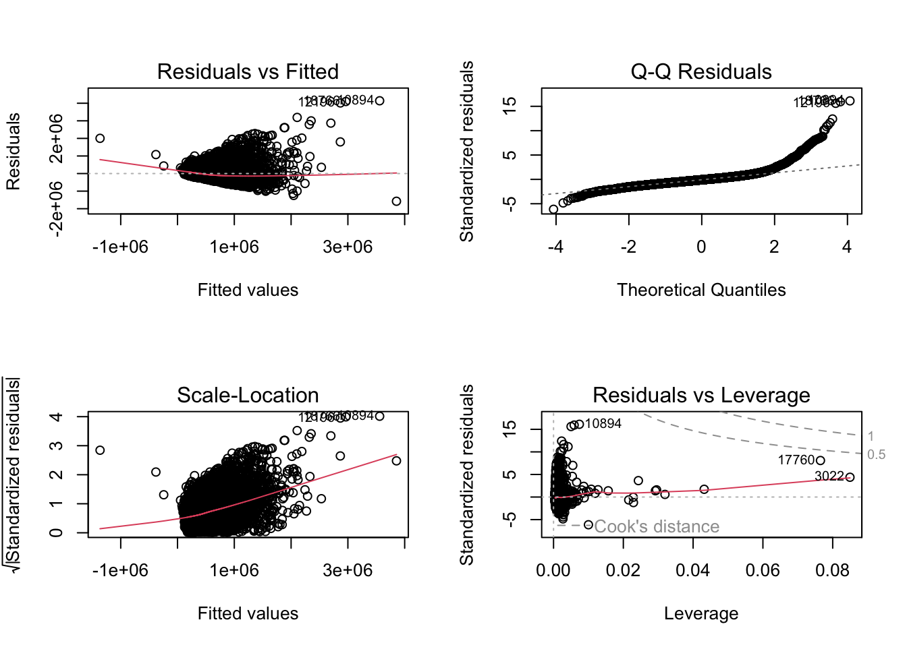

Romlig analyse av boligpriser i King County
1.0 Introduksjon
I denne oppgaven skal vi analysere boligmarkedet i King County i USA, med fokus på ulike faktorer som påvirker boligprisene. Vi vil estimere ulike hedoniske prismodeller for å undersøke hvordan både huskarkateristika og områdespesifikke variabler påvirker salgsprisene. Gjennom en Exploratory Data Analysis (EDA) vil vi kartlegge og visualisere data for å avdekke trender og mønstre i boligmarkedet. Ved bruk av romlige regresjonsmodeller forsøker vi å forstå hvordan geografiske forskjeller og nærmiljøets karakteristika bidrar til variasjoner i boligpriser.
2.0 Data
2.1 House Sales in King County, USA
Det første datasettet vi har brukt i oppgaven er House Sales in King County, USA fra Kaggle. Datasettet inneholder rundt 27 000 observasjoner med detaljerte variabler som beskriver ulike egenskaper ved de solgte boligene. I tillegg inneholder datasettet salgspris og geografiske koordinater for hver observasjon. Variablene gir en omfattende innsikt i både boligkarakteristika og salgsdetaljer for perioden 2014-2015. Vi la til en variabel som angir avstand i km til CBD i Seattle og endret kartprojeksjonen til EPSG 2926.
2.2 WADOH Environmental Health Disparities Index Calculated for King County
I datsettet House Sales in King County, USA fra Kaggle mangler det variabler som beskriver området hvor boligene ligger. Denne informasjonen henter vi fra datasettet WADOH Environmental Health Disparities Index calculated for King County, utarbeidet av Washington State Department of Health. Datasettet inneholder en EHD-indeks, og variablene denne indeksen er utarbeidet fra, for alle “cencus tracts” i King County. Vi endret også projeksjonen på dette kartet til EPSG 2926.
2.3 Cencus shapefile og tracts10
Vi benyttet også flere datasett fra en cencus shapefil for King County, utarbeidet av King County GIS. Vi hentet data om samlet familie inntekt fra datafilen acs_b19101_familyincome.dbf og opplysninger om etnisitet fra datasettet acs_b02001_race.dbf. Disse to datasettene gir informasjon om familie inntekt og etnisitet på “cencus-tracts”-nivå. Vi brukte disse to datasettene til å lage variabler som vi la til i WADOH-datasettet. Fra cencus shapefilen lastet vi også ned kartet tracts10. Vi la variablene fra WADOH-datasettet in i tracts10. Videre gjorde vi en spatial join med hus-datene fra Kaggle for å binde områdevariablene til de respektive boligene. Vi benyttet projeksjonen EPSG 2926 for alle kartene.
3.0 Exploratory Data Analysis (EDA)
Vi har gjennomført en Exploratory Data Analysis (EDA) av dataene i Geoda. Her har vi generert en vektfil ut fra 3 og 10 nærmeste naboer og brukt Bivariate Moran`s I til å undersøke romlig autokorrelasjon mellom pris og boareal (sqft_living). Vi har også brukt Bivariate Local Morans I for å finne ut hvor de små og dyre, store og dyre, billige og store, og de små og billige boligene ligger.
I Figure 1 ovenfor ser vi at Bivariate Moran’s I har en verdi på 0.406 for de 3 nærmeste naboene og en noe lavere verdi på 0.353 når vi utvidet til de 10 nærmeste naboene. Begge verdiene er positive, noe som indikerer en romlig autokorrelasjon mellom pris og boareal (sqft_living). Dette innebærer at boliger med høy pris har en tendens til å ligge nær andre boliger med høyt boareal, mens boliger med lav pris har en tendens til å ligge nær boliger med lavt boareal. At autokorrelasjonen avtar noe når vi utvider antall naboer, kan tyde på at sammenhengen mellom pris og boareal er sterkest lokalt. Dette antyder at relasjonen mellom pris og boareal er mer markant i nærområder, men svekkes over lengre avstander.

I Figure 2 har vi brukt Bivariate Local Morans I for å finne ut hvor de små og dyre, store og dyre, store og billige, og de små og billige boligene ligger. Dette illustreres ved hjelp av et LISA cluster map. Kartet til venstre viser fordelingen for 3 nærmeste naboer, mens kartet til høyre viser fordelingen for 10 nærmeste naboer. De to kartene er relativt like og vi kan se lignende mønster. Ut i fra disse kartene er det tydelig at for både 3 og 10 nærmeste naboer er store og dyre boliger er konsentrert nord i King County, det samme gjelder for små og dyre boliger. Dette reflekterer “hot spots” hvor dyre boliger samles. Det kommer også frem fra kartene at det er flere store og dyre boliger enn det er små og dyre boliger. Når det kommer til billige boliger, er disse mer jevnt fordelt enn de dyre. Sør i King County er det overvekt av billige boliger. Store og billige, samt små og billige boliger er utbredt i sør, noe som kan tyde på “cold spots” hvor fattige eller mindre attraktive nabolag er utbredt.
4.0 Hedoniske modeller
Hedoniske modeller brukes for å estimere boligpriser basert på spesifikke egenskaper som boligens størrelse, beliggenhet, nærhet til fasiliteter, samt miljømessige kvaliteter som luftkvalitet og støy. Ved å analysere hvordan disse faktorene påvirker salgspriser, kan vi finne den implisitte prisen av hver egenskap. Vi skal i dette kapittelet definere tre hedoniske modeller.
Den første modellen er en null modell med bare huskarakteristika og tids-dummier. Den andre modellen inkluderer huskarakteristika, distanse til CBD, relevante tract-variabler (transport og poverty) og tids-dummier. Den tredje modellen inkluderer huskarakteristika, distanse til CBD, EHD indeks og tids-dummier.
\(P_i = \beta_0 + \beta_1 \cdot \text{bedrooms}_i + \beta_2 \cdot \text{bathrooms}_i + \beta_3 \cdot \text{sqft\_living}_i + \beta_4 \cdot \text{sqft\_lot}_i + \beta_5 \cdot \text{floors}_i + \beta_6 \cdot \text{year\_month}_i + \epsilon_i\)
\[P_i = \beta_0 + \beta_1 \cdot \text{bedrooms}_i + \beta_2 \cdot \text{bathrooms}_i + \beta_3 \cdot \text{sqft\_living}_i + \beta_4 \cdot \text{sqft\_lot}_i + \beta_5 \cdot \text{floors}_i + \beta_6 \cdot \text{distCBD}_i + \beta_7 \cdot \text{transport}_i + \beta_8 \cdot \text{poverty}_i + \beta_{9j} \cdot \text{year\_month}_i + \epsilon_i\]
\(P_i = \beta_0 + \beta_1 \cdot \text{bedrooms}_i + \beta_2 \cdot \text{bathrooms}_i + \beta_3 \cdot \text{sqft\_living}_i + \beta_4 \cdot \text{sqft\_lot}_i + \beta_5 \cdot \text{floors}_i + \beta_6 \cdot \text{distCBD}_i + \beta_7 \cdot \text{EHDindex}_i + \beta_8 \cdot \text{year\_month}_i + \epsilon_i\)
4.1 Regresjonstabell
| Modell 1 | Modell 2 | Modell 3 |
|---|---|---|---|
(Intercept) | 79893.490*** | 845500.071*** | 405315.746*** |
(8.118) | (31.295) | (45.066) | |
bedrooms | -59606.355*** | -49195.378*** | -46342.134*** |
(-25.021) | (-24.540) | (-23.306) | |
bathrooms | 6795.037+ | 19338.314*** | 20288.528*** |
(1.762) | (5.961) | (6.316) | |
sqft_living | 315.571*** | 294.543*** | 288.133*** |
(99.650) | (108.515) | (108.069) | |
sqft_lot | -0.399*** | 0.428*** | 0.223*** |
(-8.770) | (10.824) | (5.704) | |
floors | -3785.107 | -22766.366*** | -18888.026*** |
(-0.992) | (-7.042) | (-5.948) | |
year_month2014-06 | 6015.759 | 10562.394 | 11027.366 |
(0.719) | (1.505) | (1.587) | |
year_month2014-07 | -7287.796 | 2932.383 | 3230.760 |
(-0.875) | (0.420) | (0.467) | |
year_month2014-08 | -2472.900 | 8832.195 | 7152.294 |
(-0.288) | (1.226) | (1.002) | |
year_month2014-09 | -7838.399 | 2520.796 | 1669.215 |
(-0.892) | (0.342) | (0.229) | |
year_month2014-10 | 643.829 | 7249.104 | 9102.974 |
(0.074) | (0.998) | (1.265) | |
year_month2014-11 | -7658.061 | -2033.165 | -178.541 |
(-0.822) | (-0.260) | (-0.023) | |
year_month2014-12 | -16854.808+ | -1382.891 | -127.009 |
(-1.833) | (-0.179) | (-0.017) | |
year_month2015-01 | -12714.538 | 3829.449 | 8256.888 |
(-1.222) | (0.439) | (0.955) | |
year_month2015-02 | -12149.568 | 10768.049 | 15466.226+ |
(-1.262) | (1.333) | (1.933) | |
year_month2015-03 | 24034.109** | 38092.481*** | 40551.732*** |
(2.783) | (5.258) | (5.650) | |
year_month2015-04 | 29222.396*** | 37461.977*** | 39250.975*** |
(3.522) | (5.381) | (5.692) | |
year_month2015-05 | 34683.499** | 48236.175*** | 51566.411*** |
(2.894) | (4.797) | (5.177) | |
dist_cbd[, 1] | -9749.342*** | -12277.122*** | |
(-44.666) | (-84.535) | ||
transporta | -23895.013*** | ||
(-17.986) | |||
poverty_pe | -7491.906*** | ||
(-40.361) | |||
EHD_percen | -2575.047*** | ||
(-46.591) | |||
Num.Obs. | 21200 | 21200 | 21200 |
R2 | 0.510 | 0.655 | 0.662 |
R2 Adj. | 0.510 | 0.655 | 0.661 |
AIC | 588488.8 | 581042.0 | 580636.9 |
BIC | 588640.0 | 581217.1 | 580804.1 |
Log.Lik. | -294225.378 | -290498.985 | -290297.438 |
F | 1297.057 | 2012.817 | 2180.926 |
RMSE | 257716.91 | 216175.05 | 214129.63 |
+ p < 0.1, * p < 0.05, ** p < 0.01, *** p < 0.001 | |||
En regresjonstabell for de tre hedoniske modellene er gitt i Table 1 . I modell 1, som kun inkluderer huskarakteristika og tidsdummier, er antall soverom negativt assosiert med boligprisene (-59,606.36), boliger med flere soverom har lavere priser. Antall bad har en positiv effekt (6,795.04), og større boareal øker prisen (315.57). Tomtestørrelse har en negativ effekt på -0.399, mens antall etasjer ikke har en signifikant innvirkning på prisene. T-verdiene for huskarakteristikaene er alle høye, noe som indikerer at disse er signifikante, mens antall etasjer ikke er signifikant (t-verdi er lav). Når det gjelder tidsdummier, viser resultatene at prisene varierer betydelig fra måned til måned, med noen måneder som har positive effekter på prisen, mens andre har en negativ effekt. Mai 2014 er referansemåneden, noe som betyr at alle de andre dummykoeffisientene i modellen viser prisforskjellen sammenlignet med mai 2014. Det er få av tidsdummiene som er signifikante, noe som gjelder for alle modellene.
Modell 2 som inkluderer distanse til CBD, transport og fattigdom, viser at boliger lengre unna sentrum har lavere priser (-9,749.34), mens dårligere transport og høyere fattigdom reduserer boligprisene (-23,895.01 og -7,491.91). T-verdiene for disse variablene er høye, noe som betyr at de har en signifikant innvirkning på boligprisene. Resultatene viser også at flere soverom (-49,195.38) reduserer prisen, mens flere bad (19,338.31) og større boareal (294.54) øker prisen. Større tomt (0.43) har også en positiv effekt, men med mindre innvirkning enn boareal. Flere etasjer (-22,766.37) ser ut til å redusere prisen. Alle koeffisientene for huskrakteristika har høy T-verdi. Tidsdummiene for 2015 viser igjen variasjon i boligprisene.
Modell 3 som inkluderer EHD-indeksen, viser at dårligere miljøforhold er assosiert med lavere boligpriser (-2,575.05). T-verdien for miljøindeksen er relativt høy, som indikerer at den er signifikant. De andre koeffisientene for huskarakteristika, som soverom, bad, boareal, og tomtestørrelse, er stort sett konsistente med de tidligere modellene, og har signifikante t-verdier.. Tidsdummiene i modell 3 viser også variasjon i boligprisene gjennom året, med noen måneder som har en positiv effekt på prisene, mens andre måneder har en negativ effekt på prisene.
4.2 Sammenligning av de tre modellene Hvilken er best?
R² og justert R²
Modell 1 har den laveste R² og justert R², noe som tyder på at den forklarer minst av variasjonen i dataene. Modell 2 har en betydelig høyere R²og justert R² enn modell 1, noe som indikerer en bedre forklaringsevne. Modell 3 har den høyeste R² og justert R², som tyder på at den gir den beste forklaringen av boligprisene blant de tre modellene. Basert på R² og justert R² ser Modell 3 ut til å være den mest pålitelige av de tre, da den forklarer mest av variasjonen i boligprisene.
AIC og BIC
Model 1 har en AIC-verdi på 588488.8, mens model 2 har en AIC-verdi på 581042.0. Model 3 har den laveste AIC-verdien på 580636.9. Lavere AIC-verdi betyr at model 3 er å foretrekke over model 1 og model 2, siden den gir en bedre balanse mellom tilpasning og kompleksitet.
Model1 har en BIC-verdi på 588640.0, model 2 har en BIC-verdi på 581217.1, og model 3 har den laveste BIC-verdien på 580804.1.BIC-verdi følger samme prinsipp som AIC: lavere verdier er bedre. Også her har model 3 den laveste verdien, noe som indikerer at model 3 er den beste modellen av de tre når man også tar hensyn til modellens kompleksitet.
Log-likelihood
Log-likelihood er en måling av modellens sannsynlighet; høyere log-likelihood er bedre. Modell 3 har høyest log-likelihood med en verdi på -290297.438, som betyr at den gir best tilpasning til dataene sammenlignet med de andre modellene.
F-verdi
F-verdien indikerer hvor godt modellen samlet sett forklarer variasjonen i boligprisene. Fra tabellen ser vi at F-verdien øker fra modell 1 (1297.057) til modell 3 (2180.926), noe som tyder på at den siste modellen har er best. Denne økningen i F-verdien fra modell 1 til modell 3 indikerer at når vi inkluderer flere variabler forbedres modellens forklaringskraft betraktelig.
RMSE
RMSE (Root Mean Squared Error) viser gjennomsnittlig avvik mellom de faktiske og de predikerte boligprisene. Den faller fra modell 1 (257716.91) til modell 3 (214129.63), noe som betyr at Modell 3 gir de mest presise prediksjonene og har lavest feilmargin.
Konklusjon
Modell 3 ser ut til å være den mest pålitelige og presise modellen. Modell 3 har den høyeste R² og justert R², noe som indikerer at den forklarer mest av variasjonen i prisene. I tillegg har modell 3 de laveste AIC- og BIC-verdiene, som viser at modellen gir en god balanse mellom kompleksitet og tilpasning. Med høyest log-likelihood og en betydelig forbedret F-verdi, er modell 3 også bedre tilpasset dataene enn de andre modellene. Modell 3 har også den laveste RMSE-verdien, noe som tyder på at den gir de mest presise prediksjonene med minst avvik fra de faktiske boligprisene.
4.3 Residualanalyse
Videre utføres en residual- og diagostikkanalyse for å vurdere modellens egenskaper ytterligere. Vi skal se nærmere på de fire plottene; “Residuals vs Fitted”, “Q-Q Residuals”, “Scale-Location” og “Residuals vs Leverage” for de tre hedoniske modellene. Figure 3 presenterer de fire plottene for modell 1, mens Figure 4 viser de samme plottene for modell 2, og til slutt gir Figure 5 en presentasjon av de fire plottene for modell 3.



Residuals vs Fitted
Dette plottet viser forholdet mellom residualene og de tilpassede verdiene. Et godt tilpasset lineært forhold skal vise en tilfeldig fordeling av punktene rundt null-linjen, uten tydelige mønstre. I alle modellene ser vi litt avvik fra en helt jevn fordeling. For noen av modellene, spesielt modell 1, kan vi se noen mønstre som tyder på at modellen ikke helt fanger opp alle aspekter av dataene. Modell 3 ser ut til å ha en jevnere fordeling enn de andre modellene, noe som indikerer at denne modellen kan ha en bedre tilpasning.
Q-Q Residuals
Q-Q-plottet viser om residualene er normalfordelte ved å plotte de standardiserte residualene mot de teoretiske kvantilene for en normalfordeling. I alle modellene ser vi at noen punkter, spesielt i ytterkantene, avviker betydelig fra den teoretiske linjen. Dette indikerer at det er enkelte avvik eller “outliers” som ikke følger normalfordelingen. Modell 3 ser ut til å ha litt færre avvik enn de andre modellene, men det er fortsatt tegn på at noen residualer ikke er helt normalfordelte.
Scale-Location
Dette plottet viser kvadratroten av de standardiserte residualene mot de tilpassede verdiene. En jevn fordeling av punktene langs null-linjen indikerer homoskedastisitet . I alle modellene ser vi en svak trend der variansen øker med de tilpassede verdiene, noe som indikerer at det kan være heteroskedastisitet. Modell 3 ser igjen litt bedre ut enn modell 1 og modell 2, men heteroskedastisitet kan fortsatt være et problem.
Residuals vs Leverage
Dette plottet viser hvilke observasjoner som har stor innflytelse på modellen og hvor store residualene er for disse observasjonene. Punkter som ligger langt fra de fleste dataene, og spesielt de som har høy leverage, kan være “influential points” som påvirker modellen betydelig. I alle modellene ser vi noen observasjoner med høy leverage, spesielt i ytterkantene. Cook’s distance-linjene hjelper oss å identifisere punkter med stor påvirkning. For eksempel ser vi noen observasjoner som kan påvirke modellens resultater betydelig. Modell 3 ser ut til å ha færre punkter med høy leverage enn de andre modellene, noe som kan indikere en bedre robusthet mot ekstreme observasjoner.
Konklusjon
Samlet sett gir modell 3 den beste tilpasningen blant de tre, men det er fortsatt noen utfordringer. Den har en jevnere fordeling i Residuals vs Fitted og færre punkter med høy leverage sammenlignet med de andre modellene, noe som indikerer bedre tilpasning. Men normalitet og homoskedastisitet er fortsatt utfordrende for alle modellene, noe som tyder på at det kan være rom for videre forbedring, eventuelt med alternative modeller eller transformasjoner av variablene.
5.0 Simultan test på tids-dummiene
Videre skal vi bruke en simultan test på tids-dummiene i hver av de hedoniske modellene for å avgjøre om vi trenger de.
====================================
F-statistic p-value Df F Pr(> F)
------------------------------------
1 21,194
2 21,182 12 5.717 0
------------------------------------
Linear hypothesis test:
year_month2014-06
year_month2014-07
year_month2014-08
year_month2014-09
year_month2014-10
year_month2014-11
year_month2014-12
year_month2015-01
year_month2015-02
year_month2015-03
year_month2015-04
year_month2015-05
Model 1: restricted model
Model 2: price ~ bedrooms + bathrooms + sqft_living + sqft_lot + floors +
dist_cbd[, 1] + transporta + poverty_pe + year_month
Note: Coefficient covariance matrix supplied.
Res.Df Df F Pr(>F)
1 21191
2 21179 12 8.2016 1.245e-15 ***
---
Signif. codes: 0 '***' 0.001 '**' 0.01 '*' 0.05 '.' 0.1 ' ' 1
Linear hypothesis test:
year_month2014-06
year_month2014-07
year_month2014-08
year_month2014-09
year_month2014-10
year_month2014-11
year_month2014-12
year_month2015-01
year_month2015-02
year_month2015-03
year_month2015-04
year_month2015-05
Model 1: restricted model
Model 2: price ~ bedrooms + bathrooms + sqft_living + sqft_lot + floors +
dist_cbd[, 1] + EHD_percen + year_month
Note: Coefficient covariance matrix supplied.
Res.Df Df F Pr(>F)
1 21192
2 21180 12 9.1943 < 2.2e-16 ***
---
Signif. codes: 0 '***' 0.001 '**' 0.01 '*' 0.05 '.' 0.1 ' ' 1Model 1
F-verdi: 5.717
p-verdi: 6.082e-10 (som er ekstremt lav, mindre enn 0.001)
For Model 1 indikerer den lave p-verdien (p < 0.001) at vi kan avvise nullhypotesen om at alle tids-dummiene samlet er lik null. Dette betyr at tids-dummiene har en signifikant effekt på modellens forklaringskraft, og de bør inkluderes i modellen.
Model 2
F-verdi: 8.2016
p-verdi: 1.245e-15 (også ekstremt lav)
I Model 2 er p-verdien også svært lav, noe som igjen betyr at vi kan avvise nullhypotesen. Tids-dummiene har en signifikant effekt på boligprisene i denne modellen og bør beholdes.
Model 3
F-verdi: 9.1943
p-verdi: < 2.2e-16 (enda lavere enn de to foregående modellene)
For Model 3 er resultatet det samme: den lave p-verdien indikerer at tids-dummiene er signifikante for å forklare variasjonen i boligprisene, og derfor bør tids-dummiene inkluderes i modellen.
Konklusjon
For alle tre modellene er p-verdiene ekstremt lave, langt under 0.05, noe som indikerer at tids-dummiene samlet sett har en signifikant effekt på modellene. Med andre ord, tids-dummiene bør inkluderes i alle modellene fordi de bidrar til å forklare variasjonen i boligprisene over tid. Dette betyr at tidsvariasjon er viktig for å modellere boligprisene i dette datasettet.
6.0 Spatial Regressions
Vår guppe sitt datasett kc_house_data_4242.gpkg, laster det ned.
Legger til områdevariablene til det reduserte datasettet
Modellen vi vil bruke:
Kommentar til OLS modellen:
Koeffisienter, kun tatt med de vi tenker er relevante
• Bedrooms: Koeffisienten for antall soverom (-54,050) er signifikant (p < 0.001) og negativ. Dette kan virke kontraintuitivt, men det kan være et tegn på at større boliger med flere soverom har andre karakteristikker som påvirker prisen (som mindre stuer eller eldre boliger).
• Sqft_living: Størrelsen på boligen (kvadratfot boareal) har en sterk positiv og signifikant effekt på pris (β = 308.1, p < 0.001). Dette er forventet, ettersom større boliger vanligvis er dyrere.
Sqft_lot: Størrelsen på tomten har en liten, men signifikant negativ effekt på prisen (β = -0.5161, p < 0.001). Dette kan tyde på at større tomter ikke nødvendigvis øker prisen, kanskje fordi andre faktorer som beliggenhet veier tyngre.
Andel hvit alene: Denne variabelen er positiv og signifikant (β = 452,600, p = 0.033), noe som indikerer at i områder hvor en større andel av befolkningen er hvit alene, har boliger en tendens til å ha høyere priser.
Andel asiatisk alene: Denne variabelen har en positiv og signifikant effekt (β = 498,400, p = 0.021), noe som indikerer høyere boligpriser i områder med større andel av asiatisk befolkning.
Modellens forklaringskraft:
R²: Den multiple R² er 0.5837, noe som betyr at modellen forklarer omtrent 58.4 % av variasjonen i boligprisene. Dette er en moderat god forklaringskraft for en slik modell, men det er fortsatt en betydelig mengde variasjon i prisene som ikke forklares av modellen.
F-test: F-testen er signifikant (p < 2.2e-16), noe som indikerer at modellen som helhet er statistisk signifikant og at minst én av variablene har en effekt på boligprisene.
Samlet vurdering:
Modellen gir rimelig gode forklaringer på hvordan noen boligkarakteristikker og demografiske variabler påvirker prisene, men det er klart at ikke alle variablene er like viktige. Sqft_living er den sterkeste driveren av boligprisene, mens variabler som antall etasjer og bad ikke ser ut til å spille en stor rolle. De demografiske variablene gir noen interessante funn, spesielt effekten av andel hvit alene og andel asiatisk alene, som begge er positive og signifikante. Dette kan gi innsikt i hvordan befolkningssammensetningen i områder kan påvirke boligprisene.
Videre generer vi vektmatrise ut fra k=3 og k=10 nærmeste naboer
Utfører Lagrange Multiplikator-testene
? SAR - modell …. ?
Bare midlertidig overskrift for å huska denna koden…..
Detta sto i oppgaveteksten: “Vi vil også benytte Anselin (1988) angrepsmåte (SAR, SEM og lm (OLS))) med Lagrange Multiplier Tests (gjøres enkelt vha. lm.LMtests(vår_lm, listw = vår_w, test="all") fra pakken spdep. Vi vil også estimere en SLM (SAR) modell og finne impacts for denne.” <- Pørvde på dette her:
# Opprett SAR-modellen
sar_model <- errorsarlm(price ~ bedrooms + bathrooms + sqft_living + sqft_lot + floors +
andel_hvit_alene + andel_svart_alene + andel_asiatisk_alene +
andel_andre_alene,
data = data_with_area_vars, listw = lw3)
# Bruk OLS-modellen for Lagrange Multiplikator tester
lm_tests_sar3 <- lm.LMtests(model_ols, lw3, test = "all")
print("Lagrange Multiplikator-tester for SAR-modellen med k=3:")
print(lm_tests_sar3)
lm_tests_sar10 <- lm.LMtests(model_ols, lw10, test = "all")
print("Lagrange Multiplikator-tester for SAR-modellen med k=10:")
print(lm_tests_sar10)Resultat:
Basert på resultatene fra Lagrange Multiplikator-testene med både k=3 og k=10 nærmeste naboer, tyder resultatene på at det finnes betydelig spatial avhengighet i dataene. Dette fremgår av de ekstremt lave p-verdiene for alle testene (p < 2.2e-16), noe som betyr at en vanlig OLS-modell ikke fanger opp alle romlige effekter. Vi må derfor vurdere en spatial modell som kan håndtere disse romlige avhengighetene bedre.
For begge k-verdier (3 og 10), er både LM-Error-testen (RSerr) og Robust LM-Error-testen (adjRSerr) signifikante. Dette indikerer at en Spatial Error Model (SEM) kan være nødvendig, ettersom denne modellen tar hensyn til spatial avhengighet i feilene. Samtidig er LM-Lagged-testen (RSlag) og Robust LM-Lagged-testen (adjRSlag) også signifikante, noe som antyder at en Spatial Autoregressive Model (SAR) også kunne være egnet.
Imidlertid, når vi sammenligner de robuste testene, har Robust LM-Error-testen en høyere teststatistikk enn Robust LM-Lagged-testen i begge tilfeller (k=3 og k=10). Dette indikerer at SEM-modellen passer bedre enn SAR-modellen, ettersom de romlige effektene ser ut til å påvirke feilleddet mer enn den avhengige variabelen direkte.
Konklusjon
Samlet sett peker Lagrange Multiplikator-testene mot at en Spatial Error Model (SEM) vil være den mest passende modellen for dette datasettet. En SEM-modell vil kunne håndtere den observerte spatial avhengigheten ved å modellere romlige effekter i feilkomponenten, noe som sannsynligvis gir en bedre forståelse og kontroll av romlige mønstre i boligprisene enn en SAR- eller OLS-modell ville ha gjort.
Lokalt eller globalt fenomen?
Siden testene viser betydelig spatial avhengighet på både lokale og større skalaer (k=3 og k=10 nærmeste naboer), og SEM-modellen (Spatial Error Model) er identifisert som den mest passende for å fange opp disse effektene, peker dette tydelig mot et globalt fenomen. Med andre ord, de romlige effektene påvirker boligprisene på et bredt geografisk nivå, noe som indikerer at boligprisene i et område ikke bare påvirkes av umiddelbare naboboliger, men av strukturer og forhold som strekker seg over hele regionen.
SEM-modellen fanger opp den romlige avhengigheten som eksisterer i feilleddet, noe som antyder at det er underliggende faktorer som påvirker boligprisene i store deler av området, faktorer som ikke nødvendigvis direkte påvirker den avhengige variabelen (boligprisene), men som likevel skaper et romlig mønster. Dette kan inkludere bredere økonomiske forhold, sosioøkonomiske mønstre, eller infrastrukturelle påvirkninger som fanges opp i feilleddet. Det globale aspektet understrekes av det faktum at spatial avhengighet observeres både blant nærmeste naboer og over større avstander (k=10), noe som bekrefter at romlige effekter har en vidstrakt innvirkning på boligmarkedet.
Likelihood Ratio Test:
Denne type test brukes til å sammenligne to modeller for å vurdere om den mer komplekse modellen gir en signifikant forbedring i modelltilpasning. I dette tilfellet har alle de romlige modellene (SEM, SDEM og SLX) signifikant lavere AIC og høyere log-likelihood enn OLS-modellen, noe som indikerer at de passer bedre til dataene.
Sammenligning av modellene:
SEM-modellen (AIC = 51 436) og SLX-modellen (AIC = 51 409) har begge lavere AIC-verdier enn SDEM-modellen (AIC = 51,502). AIC er et mål på modellens kvalitet, der lavere verdier indikerer en bedre modell som balanserer god tilpasning og modellkompleksitet.
SLX-modellen har den laveste AIC (51 409), noe som antyder at den gir den beste balansen mellom modelltilpasning og kompleksitet sammenlignet med de andre modellene. Log-likelihood er også høyest for SLX-modellen (-25,683.28), som bekrefter at den gir den beste tilpasningen til dataene.
Konklusjon:
Basert på AIC, log-likelihood, og likelihood ratio test ser SLX-modellen ut til å være den beste modellen for dette datasettet, siden den har den laveste AIC og høyeste log-likelihood. Selv om SEM-modellen også gir en betydelig forbedring i forhold til OLS og SDEM-modellen, indikerer AIC og log-likelihood at SLX-modellen gir den beste balansen mellom tilpasning og kompleksitet.
Bergener residualene for modellene:
Bruker “moran plot” på residualene fra de ulike modellene for å illustrere hvor godt hver modell fjerner «spatial effects» fra residualene.
For å evaluere hvor godt de ulike modellene (OLS, SEM, SAR, SDEM og SLX) håndterer spatial autokorrelasjon i boligprisdataene, har vi benyttet Moran’s I-plot på residualene fra hver modell med k=10 nærmeste naboer. Moran-plottene gir oss innsikt i hvorvidt modellene klarer å fjerne romlige effekter fra residualene og dermed oppnå en modelltilpasning som ikke er påvirket av spatial autokorrelasjon.
OLS-modellen: Moran-plot for OLS-residualene viser tydelig spatial autokorrelasjon. Punktene i plottet er sterkt gruppert, spesielt rundt første og tredje kvadrant, som indikerer positiv romlig korrelasjon mellom residualene. Dette antyder at OLS-modellen ikke håndterer den romlige avhengigheten, noe som resulterer i at romlig strukturerte feil fortsatt er til stede. Den stigende linjen i plottet bekrefter at det er en romlig sammenheng mellom residualene, som indikerer behov for en modell som kan håndtere denne romlige avhengigheten.
SEM-modellen (Spatial Error Model):
Moran-plot for SEM-residualene viser en klar forbedring sammenlignet med OLS. Residualene er mer spredt, og det er mindre tydelig clustering i første og tredje kvadrant. Dette indikerer at SEM-modellen har klart å fange opp en stor del av den spatial autokorrelasjonen som var til stede i OLS-modellen.
Den fladere linjen i plottet viser at det er mindre romlig autokorrelasjon igjen i residualene, noe som tyder på at SEM-modellen har vært effektiv i å redusere romlig avhengighet i feilene.
SDEM-modellen (Spatial Durbin Error Model):
Moran-plot for SDEM-residualene viser et lignende mønster som SEM-modellen, med spredte residualer og mindre clustering. Dette bekrefter at også SDEM-modellen håndterer spatial autokorrelasjon godt, og at den fanger opp både direkte og indirekte romlige effekter.
Linjen i plottet er fortsatt noe stigende, men det er færre ekstreme verdier sammenlignet med OLS. SDEM-modellen ser ut til å være minst like effektiv som SEM i å håndtere romlige avhengigheter.
SLX-modellen (Spatial Lag of X Model):
Moran-plot for SLX-residualene viser at modellen klarer å redusere noe av den spatial autokorrelasjonen, men ikke i like stor grad som SEM eller SDEM. Det er fortsatt en viss clustering synlig, spesielt i første og tredje kvadrant, noe som tyder på at SLX-modellen ikke fullt ut håndterer romlig avhengighet i dataene. Sammenlignet med OLS er SLX en forbedring, men den flate linjen er ikke like tydelig som i SEM- eller SDEM-plottene. Dette indikerer at SLX-modellen er mindre effektiv når det gjelder å fjerne spatial autokorrelasjon i residualene.
Konklusjon:
Konklusjonen er at SEM og SDEM-modellene fjerner spatial autokorrelasjon best, med SEM som en lett overlegen modell, mens OLS sliter mest med å håndtere de romlige effektene. SLX-modellen klarer å redusere noe av den spatial avhengigheten, men ikke i like stor grad som SEM og SDEM.
7.0 Diskusjon av resultatene
For denne diskusjonen vil vi fokusere på den hedoniske boligprismodellen, som er en metode for å estimere implisitte priser på boligens egenskaper, slik som størrelse, beliggenhet og sosioøkonomiske faktorer. Hver modell (OLS, SEM, SAR (?), SLX og SDEM) har blitt brukt for å undersøke hvordan disse egenskapene påvirker boligprisene, og gir oss innsikt i ulike aspekter av romlige avhengigheter.
Økonomisk tolkning av den hedoniske boligprismodellen
Den hedoniske modellen antar at boligens pris er et resultat av dens unike egenskaper. Modellen dekomponerer prisen slik at vi kan se hvor mye av prisen som skyldes spesifikke attributter, som antall soverom, boligstørrelse, og lokalsamfunnets egenskaper. I en hedonisk boligprismodell betyr koeffisientene de implisitte prisene på de enkelte egenskapene. For eksempel vil en positiv koeffisient for “sqft_living” indikere at større boliger, alt annet likt, er forbundet med høyere priser.
Vi kan illustrere denne tolkningen ved å lage en graf som viser sammenhengen mellom en boligs pris og noen utvalgte egenskaper.
Grafisk presentasjon :
OLS:
Begge disse grafene illustrerer sammenhengen mellom boligstørrelse målt i kvadratfot (sqft_living) og pris, men med ulike visuelle tilnærminger og fokus. Den røde grafen viser faktiske datapunkter, noe som gir en klar visuell representasjon av spredningen og variasjonen i dataene. Dette kan hjelpe oss med å forstå variasjonen i prisene og hvordan de fordeler seg over forskjellige størrelser på boliger. Den blå grafen viser regresjonslinjen tydelig, noe som illustrerer den gjennomsnittlige effekten av boligstørrelse på pris som modellen estimerer. Dette er nyttig for å fremheve modellens prediksjoner og vise hvor godt modellen passer med de faktiske dataene.
Resultatene fra OLS-modellen indikerer en betydelig romlig autokorrelasjon i residualene, noe som er bekreftet av Moran-plottet. Dette plottet viser at residualene fra OLS-modellen har en klar clustering i både første og tredje kvadrant, noe som tyder på at feilene ikke er uavhengige, men snarere er romlig strukturert. Denne romlige avhengigheten kan påvirke prediksjonene og indikere at OLS-modellen ikke er tilstrekkelig til å håndtere de romlige aspektene av dataene.
Grafen som viser “Effekt av sqft_living på pris i OLS-modellen” viser en tydelig lineær sammenheng mellom sqft_living og pris, men de spredte residualene antyder at det finnes ukjente faktorer som påvirker boligprisene. I tillegg kan det observeres at avvik fra regresjonslinjen er til stede, noe som ytterligere underbygger behovet for en modell som kan ta hensyn til romlige effekter.
SEM:
Her ønsker vi å sammenligne OLS og SEM da dette gir grafene en dypere forståelse av hvordan boligprisene reagerer på endringer i boligens størrelse, samtidig som man tar hensyn til både ikke-romlige og romlige aspekter.
Resultatene fra SEM-modellen viser en klar forbedring sammenlignet med OLS-modellen, som fremgår tydelig i Moran-plottet for residualene. Dette plottet indikerer en reduksjon i romlig autokorrelasjon, da residualene nå er mer spredt ut, med mindre clustering i de første og tredje kvadrantene. Dette antyder at SEM-modellen har vært effektiv i å fange opp de romlige avhengighetene som OLS-modellen ikke klarte.
Grafen som illustrerer “Effekt av sqft_living på pris i SEM-modellen” bekrefter den positive sammenhengen mellom boligstørrelse og pris, men gir også inntrykk av at residualene er mer tilfeldig fordelt rundt regresjonslinjen. Den flate linjen i Moran-plottet for SEM-residualene viser at romlig autokorrelasjon har blitt betydelig redusert, noe som tyder på at modellen har adressert de romlige effektene på en bedre måte enn OLS.
Disse funnene bekrefter at SEM-modellen er bedre rustet til å håndtere romlige effekter, og at den gir mer pålitelige estimater for boligpriser.
Her prøver jeg å illustrere SLX men får det ikke til…..
# Sjekk hvilke variabler som finnes i numeric_vars og relevant_coefficients print("Variabler i numeric_vars:") print(numeric_vars) print("Variabler i relevant_coefficients:") print(names(relevant_coefficients)) # Sjekk at relevant_coefficients har riktig lengde etter filtrering print("Lengde av relevant_coefficients:") print(length(relevant_coefficients)) # Prøv på nytt å beregne prediksjoner hvis alt ser riktig ut if (length(relevant_coefficients) > 0 && ncol(numeric_data) == length(relevant_coefficients)) { data_with_area_vars$predicted_slx <- numeric_data %*% relevant_coefficients } else { print("Feil: Mangler felles variabler for prediksjonen.") }# Skriv ut alle kolonnenavn i data_with_area_vars print("Kolonnenavn i data_with_area_vars:") print(colnames(data_with_area_vars)) # Skriv ut alle navn i slx_coefficients print("Navn i slx_coefficients:") print(names(slx_coefficients))# Fjern prefikset 'lag.' fra navnene i slx_coefficients names(slx_coefficients) <- gsub("^lag\\.", "", names(slx_coefficients)) # Finn felles variabler mellom slx_coefficients og data_with_area_vars common_vars <- intersect(names(slx_coefficients), colnames(data_with_area_vars)) # Sjekk at vi har felles variabler if (length(common_vars) > 0) { # Filtrer data og koeffisienter basert på felles variabler numeric_data <- as.matrix(data_with_area_vars[, common_vars]) relevant_coefficients <- as.numeric(slx_coefficients[common_vars]) # Kontroller dimensjoner og utfør multiplikasjonen print(dim(numeric_data)) print(length(relevant_coefficients)) data_with_area_vars$predicted_slx <- numeric_data %*% relevant_coefficients } else { print("Feil: Mangler felles variabler for prediksjonen.") }# Begrens numeric_vars til variablene som også finnes i relevant_coefficients numeric_vars <- intersect(numeric_vars, names(relevant_coefficients)) # Ekstraher bare de numeriske kolonnene som matcher relevant_coefficients numeric_data <- as.matrix(data_with_area_vars[, numeric_vars]) # Forsikre oss om at relevant_coefficients er en numerisk vektor relevant_coefficients <- as.numeric(relevant_coefficients[numeric_vars]) # Sjekk dimensjoner og utfør multiplikasjonen print(dim(numeric_data)) print(length(relevant_coefficients)) # Beregn prediksjoner manuelt basert på felles variabler data_with_area_vars$predicted_slx <- numeric_data %*% relevant_coefficients# Hent koeffisientene fra SLX-modellen slx_coefficients <- coef(SLX) # Identifiser variablene som finnes både i data og i SLX-koeffisientene, og sjekk at de er numeriske common_vars <- intersect(names(slx_coefficients), colnames(data_with_area_vars)) numeric_vars <- common_vars[sapply(data_with_area_vars[common_vars], is.numeric)] # Ekstraher bare de numeriske kolonnene og konverter til en numerisk matrise numeric_data <- as.matrix(data_with_area_vars[, numeric_vars]) # Beregn prediksjoner manuelt data_with_area_vars$predicted_slx <- numeric_data %*% slx_coefficients[numeric_vars]Selv om jeg ikke fikk til å illustrere grafisk denne modellen diskuteres her resultatene fra 6.0:
Moran-plottet for SLX-residualene viser en forbedring i forhold til OLS, men modellen klarer ikke å redusere romlig autokorrelasjon i like stor grad som SDEM og SEM. Det er fortsatt synlig clustering av residualene, noe som indikerer at SLX ikke fullt ut adresserer romlige avhengigheter. Den stigende linjen i plottet viser at det fortsatt er romlige strukturer i residualene, og dermed er SLX-modellen mindre effektiv i å håndtere disse.
Når vi sammenligner SLX med SDEM, er SLX-modellen en forbedring over OLS, men den flate linjen i Moran-plottet for SLX er ikke like tydelig som i SDEM-plottet. Dette indikerer at selv om SLX bidrar til å redusere romlige avhengigheter, er den ikke i stand til å fjerne dem helt.
Her prøver jeg å illustrere SDEM men får det ikke til…..
# Sjekk at SDEM er tilgjengelig og at riktig vektingsliste brukes if(exists("SDEM") && exists("lw3")) { predicted_sdem <- predict(SDEM, newdata = data_with_area_vars, listw = lw3) data_with_area_vars$predicted_sdem <- predicted_sdem } else { stop("Sørg for at både SDEM-modellen og lw3 er riktig definert.") }library(ggplot2) # Plot som viser faktiske priser og SDEM prediksjoner ggplot(data_with_area_vars, aes(x = sqft_living)) + geom_point(aes(y = price), alpha = 0.5, color = "gray") + # Viser faktiske priser geom_line(aes(y = predicted_sdem, color = "SDEM Model"), linewidth = 1) + # Viser SDEM prediksjoner labs(title = "Effekt av sqft_living på pris i SDEM-modellen", x = "Boligstørrelse (sqft)", y = "Pris") + scale_color_manual(values = c("SDEM Model" = "red")) + # Endre fargen for SDEM linjen til rød theme_minimal() # Bruker et minimalistisk tema for plottet# Generer prediksjoner fra SDEM-modellen if (exists("SDEM")) { tryCatch({ predicted_sdem <- predict(SDEM, newdata = data_with_area_vars, listw = lw3) data_with_area_vars$predicted_sdem <- predicted_sdem }, error = function(e) { print(paste("En feil oppstod: ", e$message)) }) } else { stop("SDEM-modellen er ikke definert.") } # Plot for å vise faktisk pris og predikert pris fra SDEM-modellen mot 'sqft_living' library(ggplot2) if (exists("predicted_sdem")) { ggplot(data_with_area_vars, aes(x = sqft_living, y = price)) + geom_point(aes(color = "Faktisk Data"), alpha = 0.5) + geom_line(aes(y = predicted_sdem, color = "SDEM Modell"), linewidth = 1) + labs(title = "Effekt av boligstørrelse (sqft_living) på pris i SDEM-modellen", x = "Boligstørrelse (sqft)", y = "Pris") + scale_color_manual(values = c("Faktisk Data" = "gray", "SDEM Modell" = "red")) + theme_minimal() } else { print("Prediksjoner fra SDEM-modellen er ikke tilgjengelig.") }# Ekstraher koeffisientene fra SDEM-modellen sdem_coefficients <- coef(SDEM) # Identifiser variablene som finnes både i data og i SDEM-koeffisientene, og sjekk at de er numeriske common_vars <- intersect(names(sdem_coefficients), colnames(data_with_area_vars)) numeric_vars <- common_vars[sapply(data_with_area_vars[common_vars], is.numeric)] # Ekstraher bare de numeriske kolonnene og konverter til en numerisk matrise numeric_data <- as.matrix(data_with_area_vars[, numeric_vars]) # Forsikre oss om at `sdem_coefficients` også er en numerisk vektor med riktig dimensjon relevant_coefficients <- as.numeric(sdem_coefficients[numeric_vars]) # Sjekk dimensjoner og utfør multiplikasjonen print(dim(numeric_data)) print(length(relevant_coefficients)) # Beregn prediksjoner manuelt basert på felles variabler data_with_area_vars$predicted_sdem <- numeric_data %*% relevant_coefficients # Plot for å vise faktisk pris og predikert pris fra SDEM-modellen mot 'sqft_living' library(ggplot2) ggplot(data_with_area_vars, aes(x = sqft_living, y = price)) + geom_point(aes(color = "Faktisk Data"), alpha = 0.5) + geom_line(aes(y = predicted_sdem, color = "SDEM Modell"), linewidth = 1) + labs(title = "Effekt av boligstørrelse (sqft_living) på pris i SDEM-modellen", x = "Boligstørrelse (sqft)", y = "Pris") + scale_color_manual(values = c("Faktisk Data" = "gray", "SDEM Modell" = "red")) + theme_minimal()# Hent koeffisientene fra SDEM-modellen sdem_coefficients <- coef(SDEM) # Identifiser variablene som finnes både i data og i SDEM-koeffisientene common_vars <- intersect(names(sdem_coefficients), colnames(data_with_area_vars)) # Ekstraher de numeriske kolonnene som matcher relevante koeffisienter numeric_vars <- common_vars[sapply(data_with_area_vars[common_vars], is.numeric)] numeric_data <- as.matrix(data_with_area_vars[, numeric_vars]) # Forsikre oss om at 'sdem_coefficients' også er en numerisk vektor med riktig dimensjon relevant_coefficients <- as.numeric(sdem_coefficients[numeric_vars]) # Sjekk dimensjoner print(dim(numeric_data)) # Dimensjon av numeric_data print(length(relevant_coefficients)) # Lengden på relevante koeffisienter print("Variabler i numeric_data:") print(numeric_vars) print("Relevante koeffisienter:") print(names(relevant_coefficients)) # Beregn prediksjoner manuelt if (ncol(numeric_data) == length(relevant_coefficients)) { data_with_area_vars$predicted_sdem <- numeric_data %*% relevant_coefficients } else { stop("Dimensjonene til numeric_data og relevant_coefficients stemmer ikke overens.") }Selv om jeg ikke fikk til å illustrere grafisk denne modellen diskuteres her resultatene fra 6.0:
Moran-plottet for SDEM-residualene indikerer en betydelig reduksjon i romlig autokorrelasjon sammenlignet med OLS-modellen. Residualene er mer spredt, og clustering er mindre tydelig. Dette tyder på at SDEM-modellen effektivt har fanget opp både direkte og indirekte romlige effekter, noe som er essensielt for å håndtere de romlige avhengighetene som er til stede i boligprisdataene. Den flate linjen i plottet bekrefter at romlig autokorrelasjon er minimert, og at modellen gir mer pålitelige estimater for boligpriser.
Den kvantitative analysen, inkludert AIC og log-likelihood, viser at SDEM gir en forbedring i modelltilpasningen sammenlignet med OLS, men ikke nødvendigvis i like stor grad som SEM. SDEM-modellen er fortsatt en god tilnærming for å håndtere romlige effekter, men SEM kan fremstå som den beste modellen i denne sammenhengen.
Diskusjon av de estimerte koeffisientene for hver modell
For hver modell tolker vi to utvalgte koeffisienter (f.eks., sqft_living og andel_hvit_alene) og diskuterer deres økonomiske betydning, signifikans og rimelighet.
1. OLS-modellen
Koeffisient for** sqft_living: Den positive koeffisienten indikerer at større boliger er assosiert med høyere priser.
Dette er rimelig, ettersom boligkjøpere vanligvis verdsetter større areal. Signifikansen av denne koeffisienten bekrefter at boligstørrelse er en viktig faktor.
Koeffisient for** andel_hvit_alene: En positiv eller negativ koeffisient her kan indikere preferanser basert på nabolagssammensetning.
Hvis koeffisienten er signifikant, kan det tyde på at demografiske faktorer har en økonomisk betydning i boligmarkedet.
2. SEM-modellen (Spatial Error Model)
Koeffisient for** sqft_living: SEM-modellen reduserer spatial autokorrelasjon i residualene, noe som gir en renere effekt av boligstørrelsen på pris.
Koeffisienten forblir positiv, noe som fortsatt indikerer at større boliger gir høyere priser.
Koeffisient for** andel_hvit_alene: Den spatialt justerte modellen tar høyde for romlige feilkorrelasjoner, noe som kan gi et mer pålitelig estimat for demografiske preferanser og redusere skjevheter fra naboområder.
3. SAR-modellen (Spatial Lag Model)
For SAR-modellen må vi bruke direkte og indirekte impacts for å tolke effekten av variablene, da disse gir oss en mer fullstendig forståelse av både lokale og globale effekter.
Direkte impact for** sqft_living: Direkte effekten viser hvordan en økning i boligstørrelsen påvirker prisen i samme område.
Den positive direkte effekten betyr at større boliger gir høyere priser, selv etter å ha tatt hensyn til naboers priser.
Indirekte impact for** andel_hvit_alene: Den indirekte effekten indikerer hvordan sammensetningen i ett nabolag påvirker prisene i omkringliggende områder.
Hvis andel_hvit_alene har en signifikant indirekte effekt, betyr det at demografiske faktorer i ett område påvirker boligpriser i nærliggende områder også.
4. SLX-modellen (Spatial Lag of X)
Koeffisient for sqft_living: I SLX-modellen ser vi kun på effekten av laggede uavhengige variabler, og sqft_living har en positiv koeffisient, noe som betyr at prisene påvirkes direkte av boligens størrelse, og dette er romlig avhengig av naboenes boligstørrelse.
Koeffisient for andel_hvit_alene: Denne koeffisienten kan fange opp naboers demografiske påvirkning på boligprisen i en gitt bolig.
Hvis signifikant, betyr det at nabolagssammensetningen har en økonomisk innvirkning, også i forhold til nærliggende nabolag.
5. SDEM-modellen (Spatial Durbin Error Model)
Direkte effekt for sqft_living: Den positive direkte effekten for sqft_living antyder at større boliger har høyere priser, selv etter å ha kontrollert for spatial feilavhengighet og effekten av nabolagsegenskaper.
Indirekte effekt for andel_hvit_alene: Den indirekte effekten viser hvordan nabolagskomposisjonen påvirker omkringliggende boligpriser.
Hvis signifikant, indikerer dette at demografiske faktorer ikke bare påvirker lokalt, men også har en viss spillover-effekt til andre nærliggende områder.
Konklusjon
Den hedoniske boligprismodellen viser oss hvordan boligkjøpere verdsetter ulike boligelementer, og ved å bruke romlige modeller som SAR, SEM, SLX og SDEM får vi bedre innsikt i de økonomiske effektene av både lokale og globale romlige forhold. Generelt viser analysene at boligens areal (sqft_living) konsekvent er positivt korrelert med pris, mens demografiske variabler som andel_hvit_alene kan ha både direkte og indirekte effekter avhengig av modellvalg. Den romlige modellen med de beste residualene (SDEM) ser ut til å gi den mest pålitelige vurderingen av de økonomiske effektene for både lokale og nabopåvirkninger.
8.0 Konklusjon
Den hedoniske boligprismodellen gir innsikt i hvordan boligkjøpere verdsetter ulike boligelementer, og ved å anvende romlige modeller som SAR, SEM, SLX og SDEM får vi bedre forståelse av de økonomiske effektene av både lokale og globale romlige forhold. Analysene viser at boligens areal (sqft_living) er konsekvent positivt korrelert med pris, mens demografiske variabler som andel_hvit_alene kan ha både direkte og indirekte effekter avhengig av modellvalg.
Gjennom analysen av romlige avhengigheter i boligprisdata med modeller som OLS, SEM, SAR, SDEM og SLX, avdekkes at OLS-modellen ikke klarer å håndtere romlig autokorrelasjon, noe som fører til skjevhet i residualene. SEM og SDEM-modellene er mer effektive i å fange opp og redusere romlige effekter, med SDEM som den mest pålitelige modellen for å vurdere økonomiske effekter av både lokale og nabopåvirkninger. Selv om SLX-modellen viser en viss forbedring, er den ikke like effektiv som SEM og SDEM.
Evalueringen av modellene gjennom AIC og log-likelihood indikerer at SLX gir en god balanse mellom tilpasning og kompleksitet, men både SEM og SDEM gir betydelige forbedringer sammenlignet med OLS. Samlet sett understreker analysen viktigheten av å bruke romlige modeller for å oppnå mer nøyaktige og pålitelige estimater i boligmarkedet, noe som er avgjørende for informerte beslutninger og effektiv politikk.
❗️Oversikt ❗️
- SAR -modellen -> Må vi gjøre detta gjennom hele oppgaven?
- Refere til modellene
- Finne relevante kilder (eventuelt bare hennvise til de kildene Arnstein bruker i oppgaveteksten)
- Klare å illustrer grafisk SLX og SDEM (og eventuelt SAR då…)